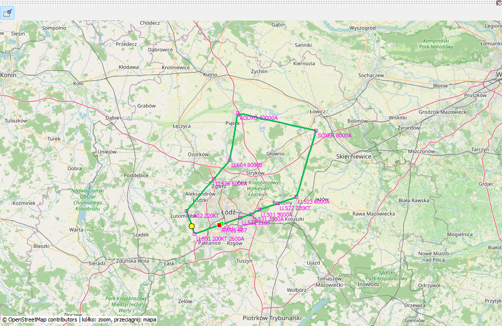

Podk³ad OpenStreetMap pozwala odnieœæ zapis pozycji do terenu, a linie maj¹ ró¿ne znaczenie: œlad to pomiary nagrania, magenta to plan. Wspólny przebieg nie musi byæ rysowany dwukrotnie; pozostaj¹ nazwy punktów i dostêpne ograniczenia. Nie uto¿samiaj ci¹g³ej linii miêdzy próbkami z dok³adn¹ trajektori¹ ka¿dego metra lotu.
Przyk³ad przedstawia pêtlê z RWY 25 EPLL przez ADOX2W, ADOXO, SOXER, SOXE2T i LL501 do ILS Z 25 EPLL. Nazwy LL601, LL602, LL536 i kolejnych punktów oraz ich jawne ograniczenia s¹ czêœci¹ demonstracji trasy, nie zamiennikiem aktualnych map nawigacyjnych. Przeci¹gaj mapê, u¿yj kó³ka do skali i Dopasuj do powrotu do ca³ego œladu/planu. Przy braku sieci dostêpne s¹ uprzednio zapisane kafelki; œwie¿y podk³ad wymaga pobrania.
Trasa rzeczywista to zapis pozycji, magenta to zapisany plan. To ró¿ne Ÿród³a.
| Opcja / czynnoœæ | Dzia³anie i ograniczenia |
|---|---|
| Nawigacja | Przeci¹gaj mapê, u¿yj kó³ka/przycisków zoom i Dopasuj. Przegl¹d pokazuje bibliotekê tras, a nie przyrz¹dy jednego lotu. |
| Kafelki | W³¹cz/wy³¹cz podk³ad online. Cache mo¿e dzia³aæ offline; pusty podk³ad nie oznacza braku GPS. |
| Plan | Magenta, nazwy punktów i dostêpne ograniczenia. Pokrywaj¹cy siê odcinek nie wymaga podwójnej linii. |
| Procedury | SID, STAR i podejœcie s¹ rozwijane po odczycie EFB i zapisywane do replay. Missed approach jest ciemnoszare; holdingi zachowuj¹ parametry i schematyczne symbole. |
| Punkty GPS | Dopasowany SimBrief mo¿e uzupe³niæ nazwê przy ró¿nicy AIRAC. Nie jest to aktualizacja bazy nawigacyjnej. |
| Eksport | PNG to ilustracja, KML to trasa dla zewnêtrznego programu. ¯adne nie zastêpuje pe³nego .mfzr. |
